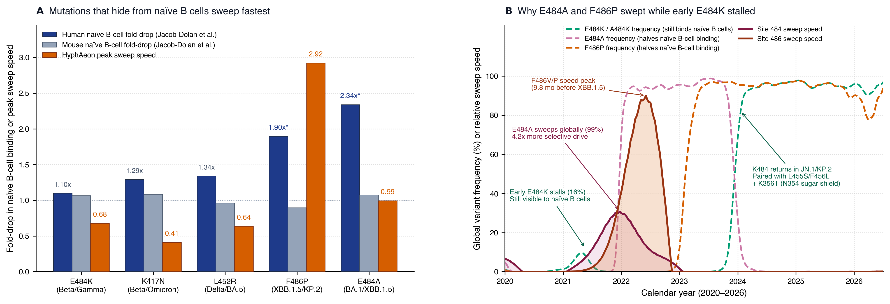
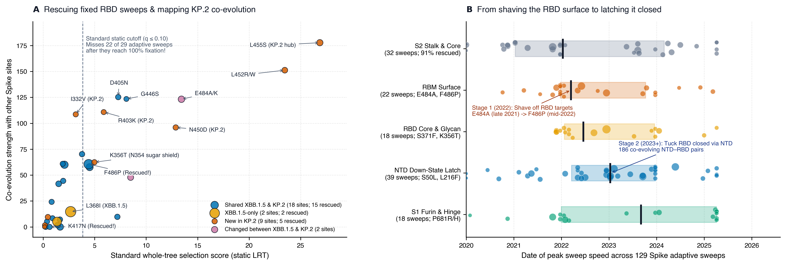

Standard $dN/dS$ selection scans average over an entire viral tree, mistaking completed pandemic sweeps for conserved sites and missing how escape mutations team up across the protein.
Pairing Catherine Jacob-Dolan, Jim Boonyaratanakornkit, and Jesse Bloom’s new human B-cell study with HyphAeon—our fast phylogenetic model of natural selection—shows that mutations hiding from brand-new human B cells drove the fastest sweeps of the pandemic before Spike evolved a molecular latch to tuck its receptor-binding domain out of sight.
E484K and E484A both escape old antibodies, but only E484A hides from brand-new human B cells—generating over 4 times more selective drive and sweeping to 99% of the global virus population.
Once an adaptive mutation reaches 100% frequency, standard tree scans mistake its identical descendants for conservation—missing 22 of 29 RBD sweeps (including F486P and K417N) that HyphAeon recovers.
Why did KP.2 switch back to K484 yet lose even more B-cell binding? In 2024–2026, K484 travels in 100% of genomes with the L455S/F456L ridge remodel and a new N354 sugar shield (K356T).
After shaving off the easy targets on the exposed RBD surface in 2022, selection shifted to 39 sweeps in the N-terminal domain that press against the neighboring RBD to hold it closed.
Whenever a new preprint from Fred Hutch and UW drops on bioRxiv, I stop what I am doing and read it. Last Friday’s paper by Catherine Jacob-Dolan, Jim Boonyaratanakornkit, and Jesse Bloom (Jacob-Dolan et al., 2026) is a gem: a clean, clever experiment that answers a question most of us hadn't even thought to ask.
When evolutionary biologists talk about antigenic drift in SARS-CoV-2 or flu, we almost always mean escaping memory antibodies—the antibodies our immune system already made after a previous infection or vaccine. Catherine, Jim, and Jesse asked something more fundamental: has SARS-CoV-2 also evolved to hide from our naïve B cells—the brand-new, unmutated immune cells we are born with?
By testing human white blood cells frozen between 2003 and 2007—more than a decade before COVID-19 existed—they showed that 3-fold fewer naïve human B cells can grab onto the 2024 KP.2 receptor-binding domain (RBD) than the original 2019 Wuhan-Hu-1 RBD ($0.0040\%$ vs. $0.011\%$). Then they ran the exact same test on naïve B cells from mice and saw no drop at all ($0.013\%$ across every variant). In other words, the RBD hasn't become generically "non-stick." It specifically shaved off the amino-acid footholds that human germline antibodies are wired to grab first (Shrock et al., 2023).
Look at the five famous single mutations they tested in the Wuhan-Hu-1 RBD (their Figure 2B): E484K, E484A, K417N, L452R, and F486P.
All five help the virus escape antibodies from an early Wuhan-Hu-1 infection.
Yet only two of them—E484A ($2.3\times$ drop) and F486P ($1.9\times$ drop)—substantially reduce recognition by naïve human B cells.
Mutating site 484 to lysine (E484K, seen in Beta and Gamma) barely changes naïve B-cell binding ($0.010\%$ vs. $0.011\%$), whereas mutating the exact same site to alanine (E484A, seen in Omicron) cuts naïve B-cell recognition in half.
In their Discussion, the authors wonder whether hiding from naïve B cells actually helped drive SARS-CoV-2 evolution, or was just an accidental side effect of escaping older antibodies. To find out what the viral family tree says, we ran their mutations through HyphAeon—a new tool we built over the past year—across $3{,}839$ dated SARS-CoV-2 Spike sequences spanning 2019 to mid-2026 (Fig. 1).

HyphAeon peak sweep speed (orange) across the five tested single mutants.
(B) Global variant frequencies ($9.34\text{M}$ genomes in CoV-Spectrum, dashed) and HyphAeon sweep speed (solid curves) at sites 484 and 486 from 2020 to mid-2026.
Why did we need a new tool to look at this?
If you run a classic $dN/dS$ selection test like HyPhy MEME across a six-year SARS-CoV-2 tree, you hit a frustrating blind spot: once a beneficial mutation like F486P sweeps to 100% of the viral population, every subsequent virus inherits that same proline.
A standard tree scan sees thousands of identical descendant branches, mistakes a finished selective sweep for purifying conservation, and misses the site!
We built HyphAeon to fix that.
Unlike massive protein language models that read entire protein sequences and memorize gene families, HyphAeon is a small (1.9-million-parameter) neural network trained on nearly 10 million mammalian codons scored by MEME.
It looks at just one codon column at a time along with the evolutionary distances between sequences, keeping silent ($dS$) and amino-acid ($dN$) changes on separate tracks.
Because it scores an alignment in milliseconds and highlights which specific branches are under positive selection at each site, it gives evolutionary biologists two practical tools:
- A selective sweep speedometer: By tracking how fast a site’s selection signal rises over sampling dates, we capture a mutation’s burst of speed while it is actively outcompeting rival strains—without losing the signal after it hits 100% fixation.
- A co-evolution map: By finding pairs of sites where positive selection lights up on the exact same tree branches, we can see which mutations need a helper mutation elsewhere in Spike to spread.
When we line up HyphAeon’s speedometer and co-evolution map with the 31 RBD sites in Jacob-Dolan, Boonyaratanakornkit, and Bloom’s paper (their Fig. 1B), three stories jump out (Fig. 2):
- Hiding from naïve B cells turned a stalled escape mutation into a global sweep:
When Beta and Gamma introduced
E484Kin early 2021, it escaped old Wuhan-Hu-1 antibodies, but because it was still easy for naïve human B cells to grab ($0.010\%$), newly infected people quickly made fresh antibodies againstK484. On our speedometer,E484K’s selective burst was brief and weak, stalling at ~16% of sequences before dying out (Fig. 1B). When Omicron hit uponE484A—which both escapes old antibodies and cuts naïve B-cell binding in half—it generated $4.2\times$ more total selective drive and swept to 99% of the global virus population. And the other mutation that halves naïve B-cell binding,F486P, produced the single fastest selective surge of all five mutants tested ($4.6\times$ to $7.1\times$ faster at its peak thanL452RorK417N). - Why did KP.2 switch back to
K484—and still lose even more naïve B-cell binding? First, across the 31 RBD sites mutated in XBB.1.5 and KP.2 (their Fig. 1B), standard whole-tree scans miss 22 out of 29 adaptive sweeps (76%)—includingF486PandK417N—because they already fixed across Omicron descendants;HyphAeon’s speedometer recovers all 29 (Fig. 2A). Second, look closely at site 484 in their Figure 1B: in KP.2 (a JN.1 descendant), site 484 actually switched fromA484back toK484! IfE484Kalone doesn't reduce naïve B-cell binding, why did KP.2 drop another 1.5-fold below XBB.1.5 ($0.0061\% \to 0.0040\%$)?HyphAeon’s co-evolution map shows why: in 2021,E484Karose by itself. In 2024–2026 ($n = 2{,}787$ genomes),K484only spread because it traveled 100% of the time with two KP.2 innovations: theL455S/F456L/L452W/N450Dridge remodel (which reshapes the binding surface right next to 484; Dadonaite et al., 2024) andK356T, which attaches a brand-new sugar shield (an N-linked glycan atN354) over the RBD core. - What happens outside the RBD? A two-stage hiding strategy:
In their Limitations section, the authors note that testing the isolated RBD cannot measure changes elsewhere in Spike—especially the trend for newer variants to keep their RBD tucked in the closed ("down") position where antibodies can't reach it. Across all 129 adaptive sweeps in full Spike,
HyphAeonshows a clear two-stage shift (Fig. 2B): in 2022, selection focused directly on the exposed RBD surface (E484A,F486P), shaving off the easy human germline targets. By 2023–2025, once the RBD ran out of easy targets to delete without hurting ACE2 receptor binding, the hottest selection moved to the N-terminal domain (NTD, 39 sweeps). Two-thirds of all co-evolving pairs involving the RBD actually connect it to other domains—including 186 pairs linking the RBD to the NTD (at sites likeS50LandL216Fthat press against the neighboring RBD in 3D structures to hold it closed). Once the RBD shaved off its most obvious targets, Spike evolved a molecular latch in the NTD to keep the remaining RBD epitopes tucked out of sight.

HyphAeon co-evolution strength with other Spike sites (y-axis) across all 31 RBD sites in Figure 1B of Jacob-Dolan et al. (2026); circle size reflects peak sweep speed. Standard static scans ($q \le 0.10$, dashed line) miss 22 of 29 confirmed sweeps after they fix.
(B) Timing of peak sweep speed across all 129 full-Spike adaptive sweeps, showing the shift from Stage 1 (shaving exposed RBM targets in 2022) to Stage 2 (latching the RBD closed via NTD mutations in 2023+).
This is why pairing experimental immunology from Catherine Jacob-Dolan, Jim Boonyaratanakornkit, and Jesse Bloom with fast phylogenetic models is so rewarding: flow cytometry at the lab bench tells us what changed in human B-cell recognition, and the viral tree shows us how natural selection wired those changes together in the wild.
HyphAeon preprint and open-source release at hyphy.org.